額外效果是每個招式和無屬性戰技中重要的一環。大部分都會在命中檢定成功並且目標被命中後才會發生。即使目標沒有從招式中受到任何傷害，只要招式成功命中了，額外效果就會被觸發。
記得一定要仔細閱讀招式描述，當你這麼做的時候你就會發現招式上有很多圖示讓你快速理解招式的額外效果。
讓我們看看吧！
永遠生效/絕不生效#
這個圖示非常直觀。
當某個效果擁有這個圖示，代表這個效果將會自動適用
當某個效果擁有這個圖示，代表這個效果永遠不會適用
這些標誌會出現在效果框之中，如下圖範例所示：
永遠會畏縮
絕不會畏縮
提升和降低#
這些效果將會是你的旅途中最有用的效果。他們會提升或者降低以下能力值包括：力量、體魄、靈巧、特殊和洞察。
副能力值是指從能力值衍生出的數值或者結合能力和技能的骰池，例如：防禦、特防、意志、閃避、命中。
向上的箭頭代表提升能力值。
向下的箭頭代表降低能力值。
藍色的圖示會調整使用者的能力值/副能力值
紅色的圖示會調整敵人的能力值/副能力值
X代表調整的數字
招式可能會提升或者降低 1、2 或 3 點能力值。
這些效果都是暫時性的，通常只會維持一個場景或者直到寶可夢被收回。
針對同一個能力值造成的數值調整並不會彼此疊加，相反的，只有數值調整值最大的招式會被適用。
一隻擁有 5 點防禦的大舌貝使用了招式「縮入殼中」，這個效果會提升 1 點防禦。
大舌貝的防禦會提升 1 點，使其防禦目前為 6 點。
下一個回合，大舌貝使用了招式「鐵壁」，這個招式會提升 2 點防禦。
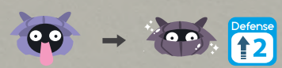
現在大舌貝的防禦將會是 7 點。
「縮入殼中」的效果被取代了。
如果大舌貝再次使用「縮入殼中」或者「鐵壁」，他的防禦將會維持不變。
如果一項能力值同時獲得了增益和減益效果，則兩種效果會同時生效。除非其中一方大於另一方，否則將會互相抵消。
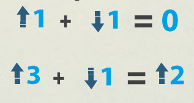
我方的大舌貝朋友使用了鐵壁，目前他的防禦是 7 。
然而，敵人對大舌貝使用了「瞪眼」！
「瞪眼」會降低大舌貝的防禦 1 點。
由於現在同時擁有增益和減益效果，讓我們看看哪個會佔上風
鐵壁的增益效果瞪眼的減益效果
大舌貝的防禦將會變為 6 點。
如果大舌貝再次使用「鐵壁」並不會有任何效果，如果敵人再次使用「瞪眼」也是同理。
記得，你會保留最高的調整值並且增益和減益效果會互相重疊。
說到減益效果，你必須知道這個效果無法讓你陷入無助的狀態。
減益效果僅可以把能力值和副能力值降到最低 1 點。
+ 靈巧 2 / 5 = 靈巧 1 / 5
減益效果無法把你的能力值或者副能力值降到 0 。
至於增益效果，雖然這個效果可以讓你走得更遠但是無法解決全部問題。
增益效果僅可以讓你的寶可夢最高達到 10 點。
這代表如果你的寶可夢在任意能力值已經達到 10 點的情況下你就再也無法提升了。
+ 靈巧 10 / 10 = 靈巧 10 / 10
如果你的寶可夢已經達到他們能力值的上限值，並且通過招式或特性再次提升，只要那個數值是 10 或以下，你就可以這麼做。
+ 靈巧 4 / 4 （寶可夢的極限） = 靈巧 4 / 6
有些攜帶道具也可以提升或者降低寶可夢的能力值，但是照例：他們無法互相疊加，僅取最高值。
然而，有一個方法可以讓增益或者減益效果疊加，那就是特性。
把招式/道具和特性組合起來可以讓你獲得更多增益或減益效果！
浮潛鼬的靈巧為 4。牠的特性是「悠游自如」，能夠在天氣狀態為下雨的時候提升 2 點靈巧。
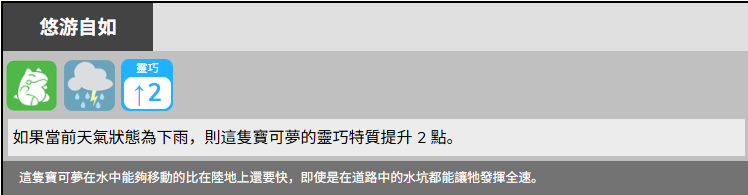
現在的天氣狀態正好是下雨，且浮潛鼬在牠的回合中使用了招式「高速移動」。這個招式將讓使用者的靈巧提升 2 點。
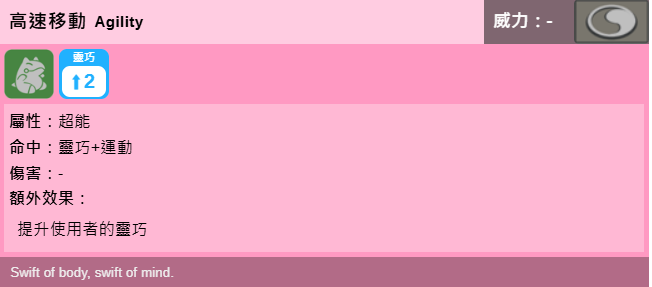
最終，浮潛鼬擁有總共 8 點靈巧：
靈巧 4 / 4 + = 靈巧 8 / 4
4 點牠自己原本的能力值，2 點來自牠的特性，以及另外 2 點來自牠所使用的招式。
只要和特性組合在一起，寶可夢的能力將會獲得令人難以置信的提升。
記得，招式和道具提供的增益/減益效果無法互相疊加，然而可以和特性疊加。
然而，特性無法互相疊加，就算那個特性是來自其他寶可夢的。
訓練家提示
你不允許帶著已經獲得增益效果的寶可夢參加正式對戰。讓寶可夢返回你的精靈球並且在戰鬥開始時才讓他們登場吧。
阻擋#
這個效果將會導致目標陷入阻擋並且不能逃脫。受阻擋的寶可夢在一段時間內不能離開戰場、被替換下場或者回收到精靈球中。
這同時也會讓替換招式的效果無效。
機率骰#
你已經直到如何骰骰池了。同時你也需要擲機率骰，不是為了成功而是為了變為幸運的可能性！機率骰會以以下圖示標示：
標誌上的X代表著你需要用來擲骰判定的機率骰的數量。這些骰子不會用於任何行動，而是用來判定某個效果是否會發生的機率。
當你擲機率骰時，如果結果為（6），效果將會發動。
無論你骰了多少顆機率骰，只要有任何一個的結果是（6），那個效果就會發動。
有時候一些效果的左邊會有機率骰圖示：
在這個例子當中：玩家擲 5 顆機率骰，只要出現 1 個或以上的（6），使用者的防禦就會提升 1 點。
有時候機率骰會出現在異常狀態欄裡面用來表示造成該異常狀態的機率，如下圖範例所示：
越多骰子，機率越高。
蓄力招式#
蓄力招式是非常強力的招式，但在施放前需要一些準備時間。
蓄力招式會以以下圖示標示：
蓄力招式需要消耗兩個回合和兩個行動來使用。第一個行動來為這個招式蓄力，第二個行動來釋放招式。
這是蓄力招式的運作流程：
使用者的第一回合：擲命中並且記錄下你獲得的成功數。
如果擲骰成功，這個招式會開始蓄力。
蓄力會消耗 1 個行動。
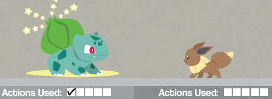
妙蛙種子為「日光束」蓄力中。
使用者的下一個回合：是時候釋放招式了，和平常一樣擲傷害，並且消耗另 1 個行動。如果目標想嘗試對抗/閃避，他們可以在招式釋放的回合這麼做，而不是在招式蓄力的回合。
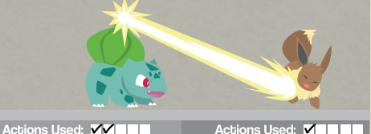
妙蛙種子使用了「日光束」
在蓄力途中，使用者依然可以閃避。
這個招式可以無需蓄力就用來對抗。如果使用者想要在蓄力途中對抗，他們可以這麼做，然而，使用者僅能以正在蓄力中的招式對抗，這會讓他們浪費掉聚集能量的那一回合；雖然不是最佳的選擇但是偶爾會是最佳的替代方案。
複製招式#
擁有以下圖示的招式可以成為其他招式的複製品：
複製招式會獲得同樣的類型、威力和額外效果，只有命中骰不同。
多數情況下，你可以選擇要複製哪個目標的招式，再選擇同一個目標或場上其他目標作為複製招式的目標。讓你能將對手的手段反制回去，或是增強自己隊伍的火力。
大比鳥的隊友，火爆獸上回合使用了「燃盡」，然而敵人撐下來了！現在是大比鳥的回合，大比鳥決定使用「鸚鵡學舌」來給予對方最後一擊！
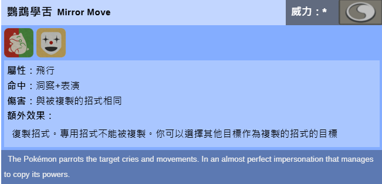
大比鳥擲洞察 + 表演並且成功了，牠複製了隊友的「燃盡」，並對著敵人使用！
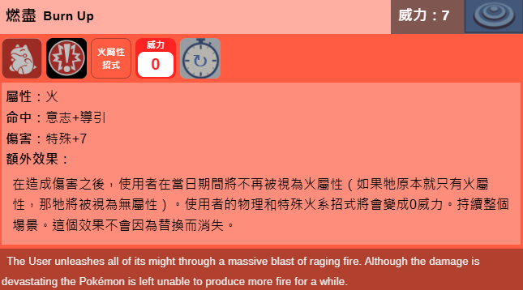
由於擁有這圖示的招式通常都是變化招式，所以不能用來對抗，但是複製出來的物理或者特殊招式可以被對抗。
專用招式不能被複製，而且你不能複製已經被複製過的招式。
請務必仔細閱讀哪些招式可以被複製，因為其中可能存在限制。
持續時間#
我們已經知道如何在遊戲中計算時間，但有些效果有時間限制，從啟動的那一刻起就會開始計時，當時間結束時，這些效果會消失得就像從未存在過一樣。其他效果則有較為穩定的持續時間，可以在任何需要的時候隨意使用。
持續 X 輪
這個效果僅會持續指定數量的戰鬥輪。每個戰鬥輪結束時都會減少 1 點倒計時。這些招式若再次使用並不會重置計數，你必須等到效果消退後才能重新啟動。
持續整個場景
這個效果會持續整個場景或者直到被影響的寶可夢離開戰鬥為止。如果再次使用，效果不會重疊，只有最近一次使用的效果會生效。大多數提升或降低能力值／副能力值的招式都默認具有這種持續時間，即使沒有明確寫出。
持續永久
這個效果會永遠保持，無法反悔，所以請謹慎選擇。
如果你想查閱更詳細的遊戲內時間，你可以查看時間和戰鬥概念規則。
入場危害#
你要小心以下圖示：
這是一種會留存在敵方場地一側的陷阱／障礙物，它會在對手的寶可夢進入戰場時立刻造成傷害。已經在戰場上的寶可夢則不會受到影響。
這類陷阱的效果會在各自帶有這圖示的招式效果中寫明，最常見的效果包括造成傷害、降低能力值，以及造成異常狀態。與逼迫對手換人的替換招式搭配時會特別實用。
防護力場#
如果你看到帶有以下圖示的招式：
這代表其效果是一個會留存在使用者方的防護力場，為友方的所有成員減少傷害。
防護力場的持續時間、減少的傷害量以及傷害的種類（物理、特殊或兩者皆有），都會在該招式的效果中標註。
針對相同種類傷害的防護力場效果不會疊加。
治療和回復HP#
有些寶可夢可以學到回復健康的招式。該招式都會以以下圖示標示：
基礎治療
回復 3 點一般和致命傷害。
強效治療
回復 5 點一般和致命傷害。
定額治療
治療些許傷害。
如果你的寶可夢使用了帶有任何一個這些圖示的招式，進行命中判定並成功時，寶可夢必須花費 1 點意志點才能夠獲得它的好處。如果命中判定失敗，那麼你就不需要花費任何意志點。
你會發現有些招式也具有治療效果，但並未標註相關圖示。這些招式的回復效果取決於其他因素，並不是一個可持續依賴的治療來源。
訓練家提示
治癒招式並不是無限的，你寶可夢的意志點將會在回復所有 HP 前被消耗殆盡。
永遠記得攜帶傷藥！
治療通常限制為每個戰鬥輪最多回復 3 點HP。更多詳情請查閱在戰鬥中治療規則
你的大竺葵正在跟野生寶可夢對戰，且你命令牠使用招式「青草場地」。
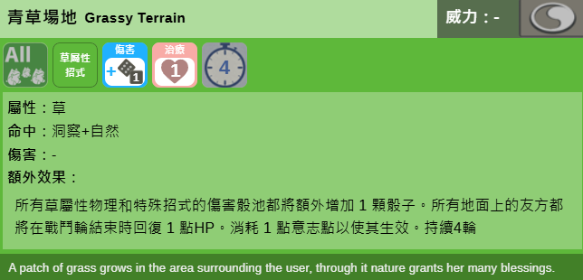
大竺葵花費 1 點意志，以觸發這個招式的回復效果。全部在大竺葵一方的寶可夢都會獲得這個治療效果！
過了幾個戰鬥輪後，某人使用了「大晴天」，大竺葵只剩 5 HP，所以你命令牠使用招式「光合作用」
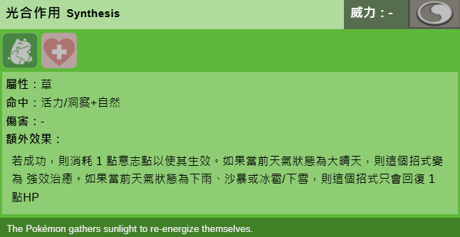
並且這個招式的效果會是：
如果目前天氣狀態為大晴天，則這個招式變為強效治療。
這代表大竺葵會回復 5 點HP，並且回復至滿血！然而因為大竺葵在這一個戰鬥輪中已經達到回復上限，所以在這輪結束時的青草場地的回血效果就會被浪費掉。
高要害率#
如果你重新查閱擊中要害規則，你會發現如果你的命中骰出好結果，你會獲得傷害加成。一般來說，如果你想擊中要害，你必須在命中判定中得到比行動難度列表中的需求成功骰數還要多 3 顆成功骰的擲骰結果才行。
高要害率招式會降低 1 顆擊中要害所需的成功骰。這代表你只需要比需求成功骰數還要多 2 顆成功骰就成功擊中要害。高要害率招式會以以下圖示標示：
擁有這個效果的招式可以和「超幸運」特性疊加。
致命傷害#
當你使用致命傷害可選規則時，如果寶可夢被命令這麼做，或本性極為殘暴，並且使用帶有以上圖示的招式，就會造成致命傷害。
這些招式默認不會造成致命傷害，除非該寶可夢收到「毫不留情」指令。正式對戰中不允許使用致命傷害。
更多詳情請查看毫不留情規則。
低命中率招式#
如果你使用了帶有以下圖示的招式：
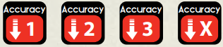
則從你的命中判定中扣除其指定數量的成功骰。
這代表你嘗試使用的招式非常難以控制。
你必須提升自己的能力值與技能點數才能更好地控制並把握使用此招式的時機，因為低命中率會與多重行動的難度疊加，使得你在戰鬥輪後段選擇使用此招式時會變得愈來愈困難。
皮卡丘正試圖使用招式「打雷」來攻擊敵方的臭鼬噗，這個招式帶有命中率-2的標記：
帶有
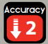
= 1 3 2 6 4皮卡丘的骰池招式命中率 -2 成功骰
命中判定失敗，閃電打在了場地之中，但沒有命中牠的目標。
輪到臭鼬噗的回合，牠使用了招式「煙幕」來讓皮卡丘的命中率降低 1 點。
在下個戰鬥輪，皮卡丘使用「打雷」的命中判定將變成這樣：
帶有
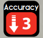
= 1 6 2 6 4皮卡丘的骰池招式命中率 -3 成功骰
皮卡丘將會需要更加磨練牠的技巧才能更好的控制這個類型的攻擊招式。
疼痛懲罰和其他懲罰也會扣除掉更多的成功骰。
儘管有些招式的威力也許看起來很吸引人，但想要贏得戰鬥，你所需要不僅僅是威力強大的招式。
如果你的敵人依賴於這種威力強大但命中率低的招式，不用害怕，透過閃避或對抗，讓他們的優勢變成劣勢吧。
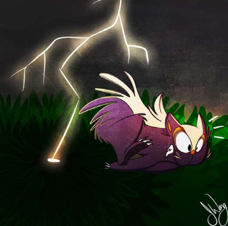
使用……的招式#
以下圖示用來標示該招式會使用某樣可能會和特定特性有互動的東西。
啃咬類招式
這類招式會咬向敵人並且會從「強壯之顎」特性中獲益。
切割類招式
這類招式會劈砍或者砍擊敵人並且會從「鋒銳」特性中獲益。
拳類招式
這類招式會使用拳頭來拳擊敵人並且會從「鐵拳」特性中獲益。
投彈類招式
這類招式會發射爆破物並且會被「防彈」特性擋下來。
風類招式
這類招式會使用風流並且會強化擁有「風力發電」特性的寶可夢。
其他特性也有可能和以上招式有互動。
重新充能招式#
有些強力招式可以無需蓄力就直接釋放，然而這會讓使用者陷入疲勞並且需要點時間來重新聚集回能量。
當你看見以下圖示時你要小心：
當你成功以這個招式命中後，使用者必須在牠下一輪使用牠的第一個行動來重新充能。即使寶可夢被回收也需要重新充能。
這個效果會疊加，所以如果你在同一個戰鬥輪中使用了三個帶有這個效果的招式，下一個戰鬥輪時你需要消耗你前 3 個行動來重新充能。
必中招式#
帶有以下圖示的招式無法被閃避：
對方依然可以進行對抗並且命中骰也不一定會成功。
無論如何，這個即將來臨的招式都會給敵人帶來壓力。
持續傷害#
你在使用帶有以下圖示的招式時必須格外小心：
這個招式會傷害目標並讓把目標困在危險的環境或是在他們身上附著造成撕裂的物體。
每個戰鬥輪結束時，對目標骰 2 顆無屬性傷害骰。
不同來源的持續傷害不會互相疊加，同時只會有一個效果觸發，先觸發的效果擁有更高的優先權。
這個效果的持續時間會在招式的描述中說明。
範圍外#
以下圖示代表寶可夢離戰場太遠，大部分招式都無法觸及他們。
當處於範圍外時，寶可夢無法被招式或者無屬性戰技作為目標。
只有特定的招式可以命中他們，取決於他們遠離的方式（空中、挖洞進入地底或者沉入水中等等）
粉末類招式#
這個圖示表示這個招式使用粉末、灰塵或者孢子讓敵人吸入後影響他人。
大部分寶可夢都會被影響，草系寶可夢對這類招式擁有天然的免疫所以不會因為這類招式受到傷害也不會被效果影響。
狂暴#
如果你在找會讓寶可夢釋放野性的招式，那麼你該看看狂暴招式，以以下圖示標示：
命中判定一旦成功，寶可夢心中便會燃起原始的怒火，狂暴隨即啟動。
每回合最多可以連續使用 3 次狂暴招式
當處於狂暴狀態時，這個招式可以在使用者的回合中使用或者用來對抗。
當處於狂暴狀態時，使用者無法閃避或者使用其他招式，否則狂暴狀態將會結束
當狂暴結束後，使用者會陷入「混亂」異常狀態。
你可以在狂暴狀態中進行對抗，然而這麼做會消耗 1 次這個招式的可使用次數。
若在狂暴尚未啟動時進行對抗，則不會觸發狂暴效果。
狂暴可以在招式首次使用後的任何時間被中止，然而寶可夢依然會陷入「混亂」異常狀態。
非接觸類招式#
以下圖示代表使用者不會和目標有物理上的接觸。
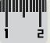
你只會在從一定距離外造成傷害的物理招式上找到這個圖示，代表這個寶可夢和目標之間的距離不是觸手可及。
有些特性會因為接觸和靠近而觸發。
所以這些招式可以保證你使用物理力量時和對方保持一個安全距離。
特殊招式都會被視為非接觸類招式。
先制反應和後制反應#
以下圖示：
表示你可以將該招式作為先制反應或者後制反應使用。更多詳情請查閱反應規則
反作用傷害#
使用者會被自己的招式所傷，如常對敵人擲骰決定傷害，接著為其每一個成功骰再擲骰一次，決定對自己造成的傷害（無視自己的防禦或特防）。
固定傷害#
固定傷害代表這個招式會對敵人造成無視外在因素例如防禦的固定傷害。
造成上面所標示的數字的固定傷害。
有些效果可以減少固定傷害的傷害。
聲音類招式#
和其他依特定要素分類的招式一樣，聲音類招式顧名思義是以聲音為基礎，但除了會與特定特性互動之外，它還有一些獨特之處。如果你看到以下圖示：
這代表這個招式的能量通過聲波傳達，幾乎可以抵達任何地方。
聲音類招式會穿過替身、防護力場和掩護。
護盾招式#
護盾招式以以下圖示標示：
這類招式的效果各不相同但是都有一個共同點，那就是這類招式都涉及抵擋即將來臨的攻擊的行動。
大部分護盾招式都可以作為反應使用，這類招式隨時都準備好保護你了。
和對抗/閃避不一樣，護盾招式會直面攻擊，但幾乎可以確定能安然無恙地化解。護盾類招式可以讓使用者受到的傷害降至 0 。
然而，這是有前提條件的……
你在每個戰鬥輪只可以使用一個護盾招式。
如果你在下一輪又繼續使用它，你將會在該招式的命中判定上獲得額外的命中率-2 的懲罰並且會隨著連續使用的輪數而增加。
第一輪使用護盾招式第二輪使用護盾招式第三輪使用護盾招式
沒有懲罰降低命中率 2 降低命中率 4
因此如果你不間斷地持續使用護盾類招式，失敗的機率將會大幅度上升。
為了避免這件事情，在整個戰鬥輪中都不要使用護盾類招式並讓懲罰重置。
連續行動#
多重行動會在每個戰鬥輪中被處理。
但有些招式具有著特別的性質，讓你的複數行動能夠在同一回合被一口氣釋放出來；它們被稱為「連續行動」。
連續行動讓你可以一回合中重複使用同一個招式最多 5 次。
所有行動都會以同一個敵人作為目標。
連續行動會以以下圖示標示：
雙重行動
每回合可以使用這招式最多 2 次。
三重行動
每回合可以使用這招式最多 3 次。
三重行動
每回合可以使用這招式最多 5 次。
這是連續行動運作的方式：
喵喵打算使用招式「亂抓」，這是一個連續行動招式。
因此喵喵可以在一回合內最多行動 5 次來重複使用招式「亂抓」，但是喵喵的訓練家宣告使用了 2 個多重行動來使用亂抓。
在進行其命中判定時，喵喵將會遵循多重行動的規則來決定判定是否成功，只是這一次，這些行動將會同時釋放。
喵喵的第一次亂抓：
= 2 4 1 3 5
喵喵的骰池招式命中率 = 1 顆所需成功骰
喵喵的第二次亂抓：
= 4 6 2 1 5
如果日後牠的骰池在一定訓練後成長的話，喵喵將有機會在同一個回合中進行最多 5 次攻擊！
替換招式#
在戰鬥中途替換寶可夢通常不是一個好主意，不過你的寶可夢或許有一些小技巧讓這些高風險的替換變得輕而易舉，甚至更進一步強迫對手替換寶可夢打亂他們的戰術。
替換招式，以這些圖示標示：
使用者方替換招式
從你的隊伍中替換新的寶可夢上場。
敵方替換招式
把敵人送下場，強迫敵方進行替換。
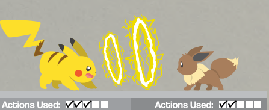
戰鬥輪已經進行了一段時間，皮卡丘在牠的第三個行動使用了招式「伏特替換」！
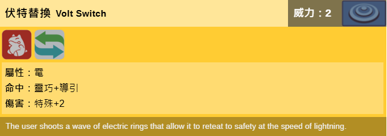
當「伏特替換」造成傷害後，皮卡丘會回到精靈球中並且會有別的寶可夢替換上場。
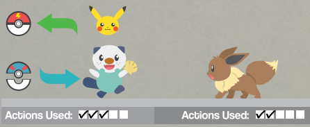
隊友水水獺已經準備好戰鬥並踏入戰場，並且會保留皮卡丘的先攻和剩餘行動數。
在此之後戰鬥將會如常繼續。
新登場的寶可夢會保留替換下場的寶可夢的先攻和剩餘行動數
每個訓練家在每個戰鬥輪僅可以使用一次替換招式效果
可以使用敵方替換招式來對應使用者方替換招式
使用替換招式來對抗不會觸發替換效果
成功對抗替換招式可以阻止其效果的發動
專用招式/專屬特性#
有些招式/特性是專屬於特定的寶可夢的，賦予牠們對自身力量的特殊掌握。
以下圖示會標示出專用招式/專屬特性：
這類招式/特性往往非常強大或是在使用方式上極為特殊，因此大多數情況下無法被大部分招式或特性複製、替換、忽略或覆蓋。它們也無法被其他物種學會，然而，最終裁定權在說書人手上。
易傷#
擁有以下圖示的招式：
會讓使用者處於易傷，這代表他們面對特定來源的傷害時會有更高的風險。
即使使用者處於範圍外，他們也可以被特定招式選為目標
當寶可夢處於易傷時，他不能在面對指定的招式時使用反應，也不會從防護力場或掩護中獲益
當寶可夢處於易傷並且被擊中時，他會受到 2 點額外的傷害。